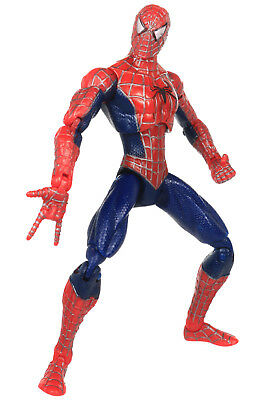

Early summer, 2009, the recent blockbuster Spider-Man 3 is at the height of its popularity. Having the highest villian count of the trilogy, every toy manufacturing company bad a field day. A stream of Spider-Man related figures & accessories, & at the center of it all, the staple figure, Spider-Man himself. He's designed with one hand clenched in a fist, the other ready to webswing at a minute's notice.
Thinking back to this period time, I remember my mother & my father, and the impending divorce. I remember several apartments and condos, endless road trips, new dads, long visits and lost toys. Among those toys, I don't remember much, but I remember Spider-Man.
This Spider-Man in particular was part of a line of hot new toys bringing the Sam Raimi Spider-Man films to life, featuring several diverse villians & set pieces. I remember battling against Sandman, Venom, Goblin Junior, & Doctor Octogonapus. It's hard to focus, hearing the screaming and the shattering glass.
Thinking back to these ancient times, I wonder where my life would be like if I didn't have such reprieves from reality. Sam Raimi's Spider-Man trilogy built the holy grail of my childhood, and that action figure was the fountain of youth.
All in all, I hope Mark Web trips on his porch & falls face first into the dirt hill of a vicious red-ant colony. Actually, No, I hope the producers at Sony do so. Sam Raimi had a plan, and the producers stepped in with their milking gloves on and said "DURH-HUR, DAAA, THROW IN DA VENUM"